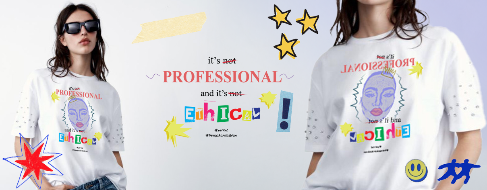
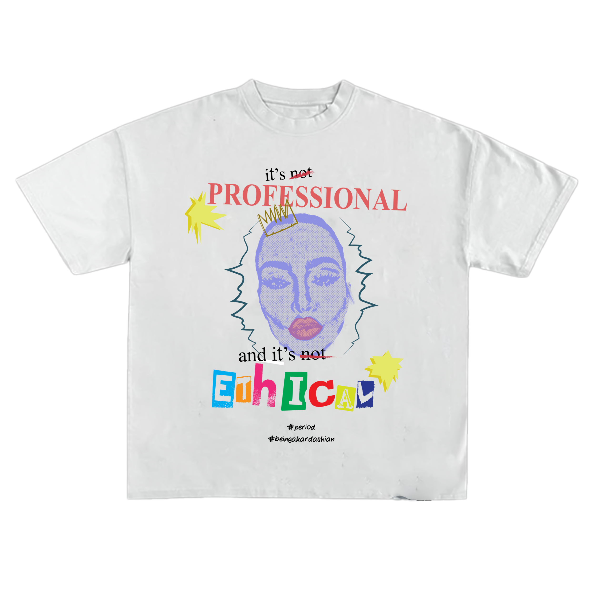
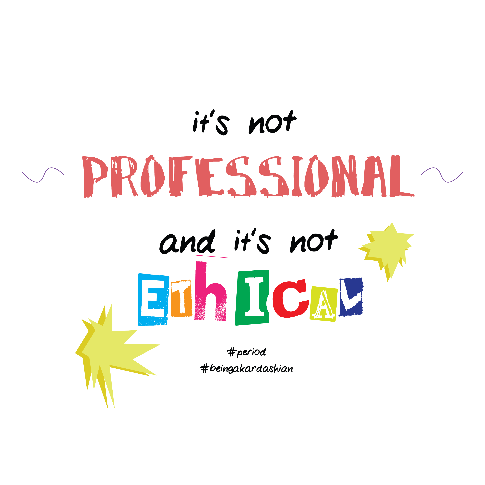
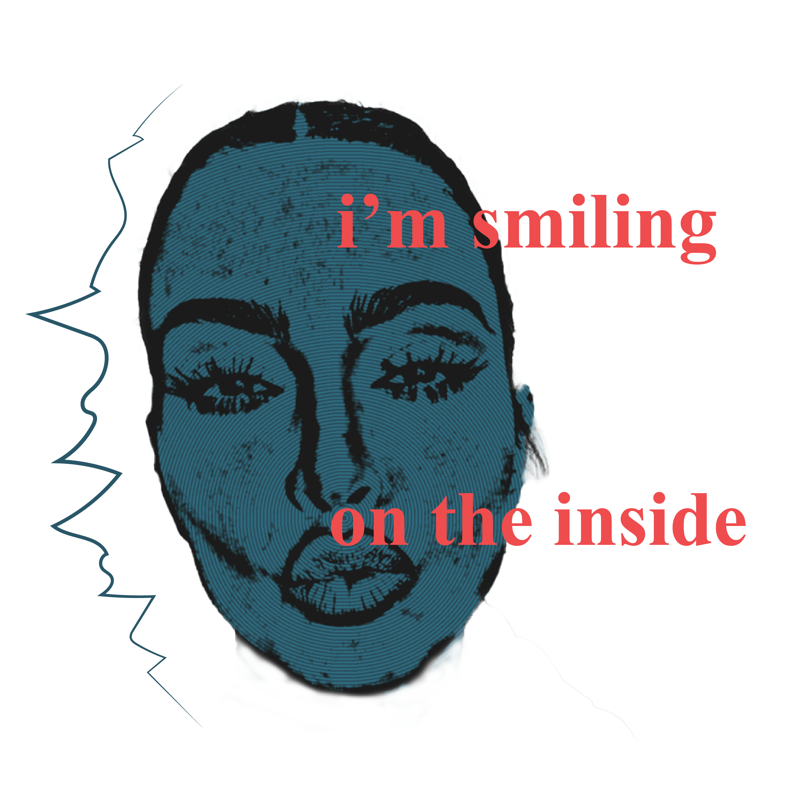
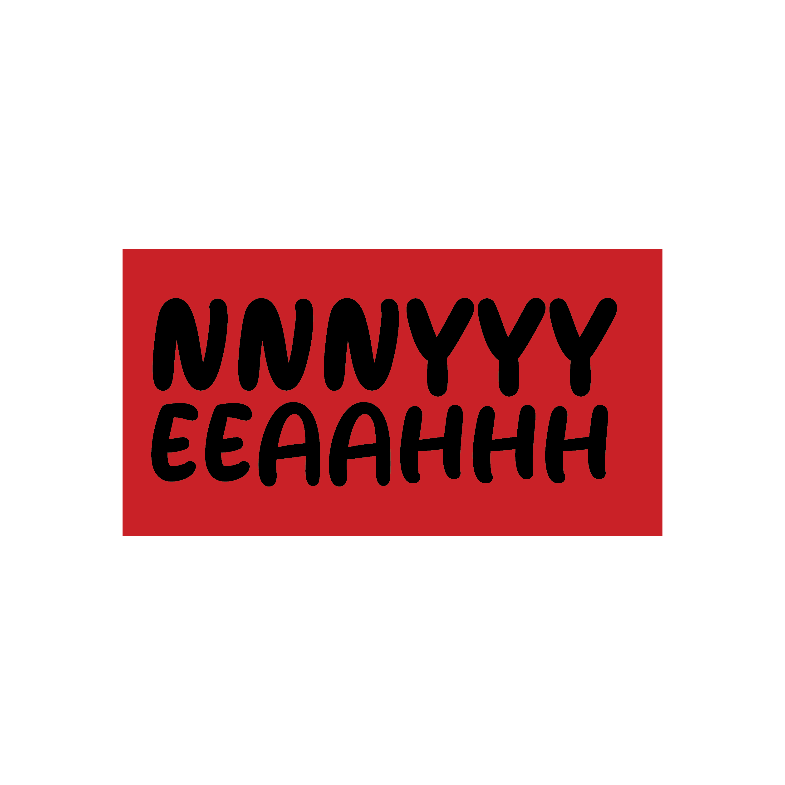
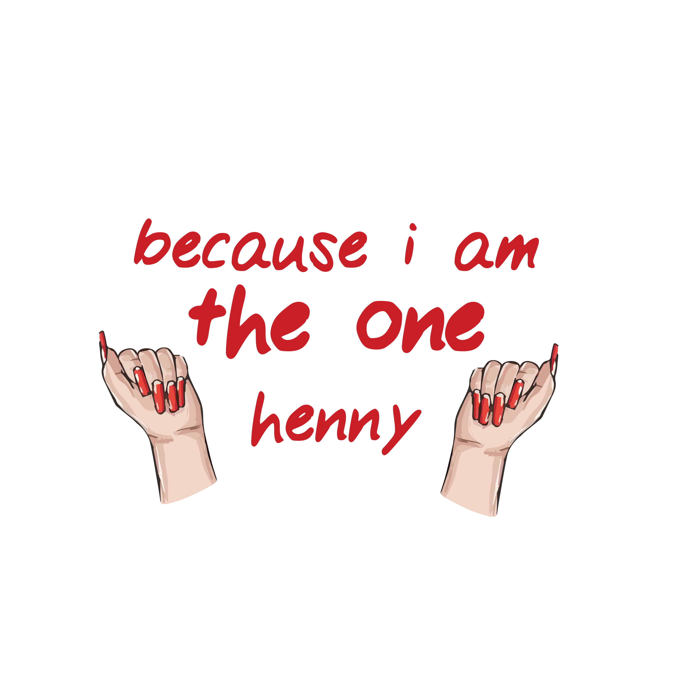
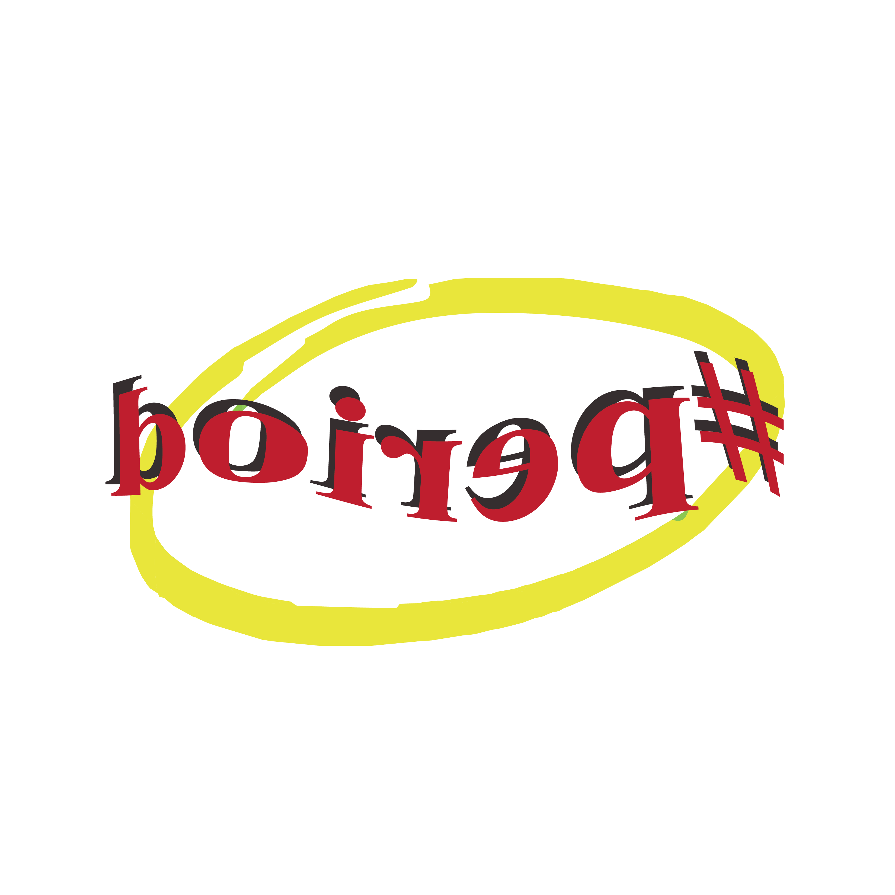
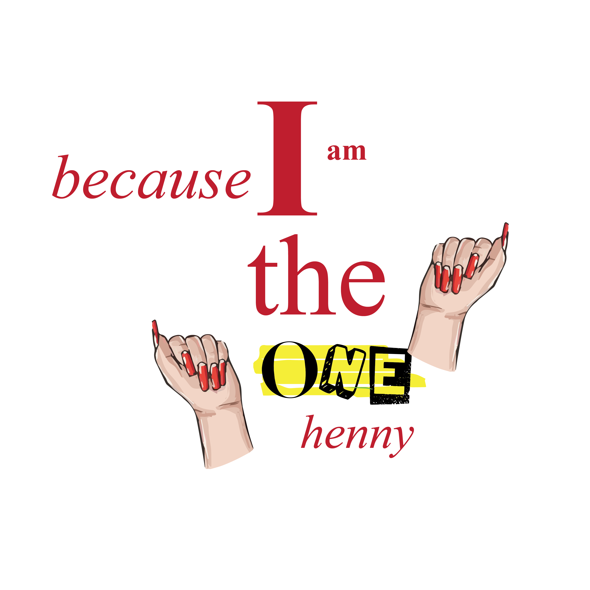
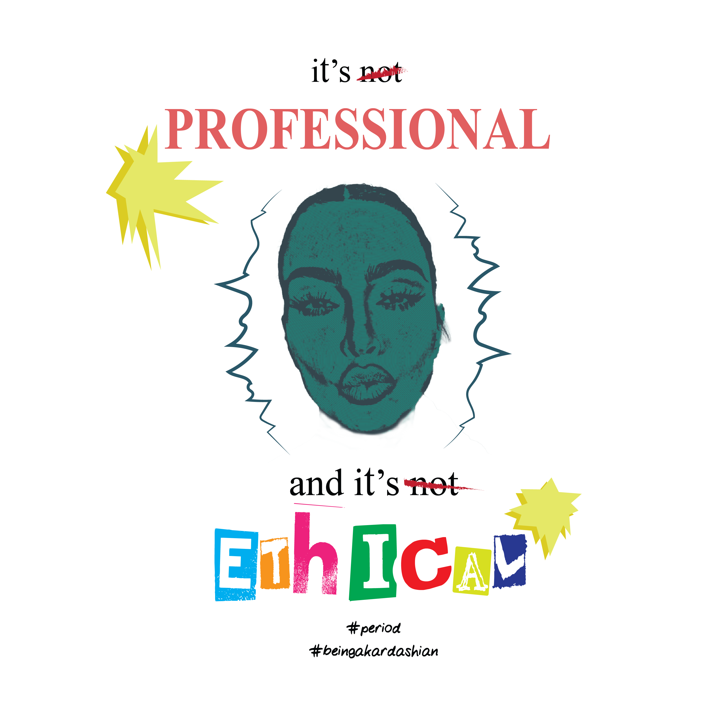
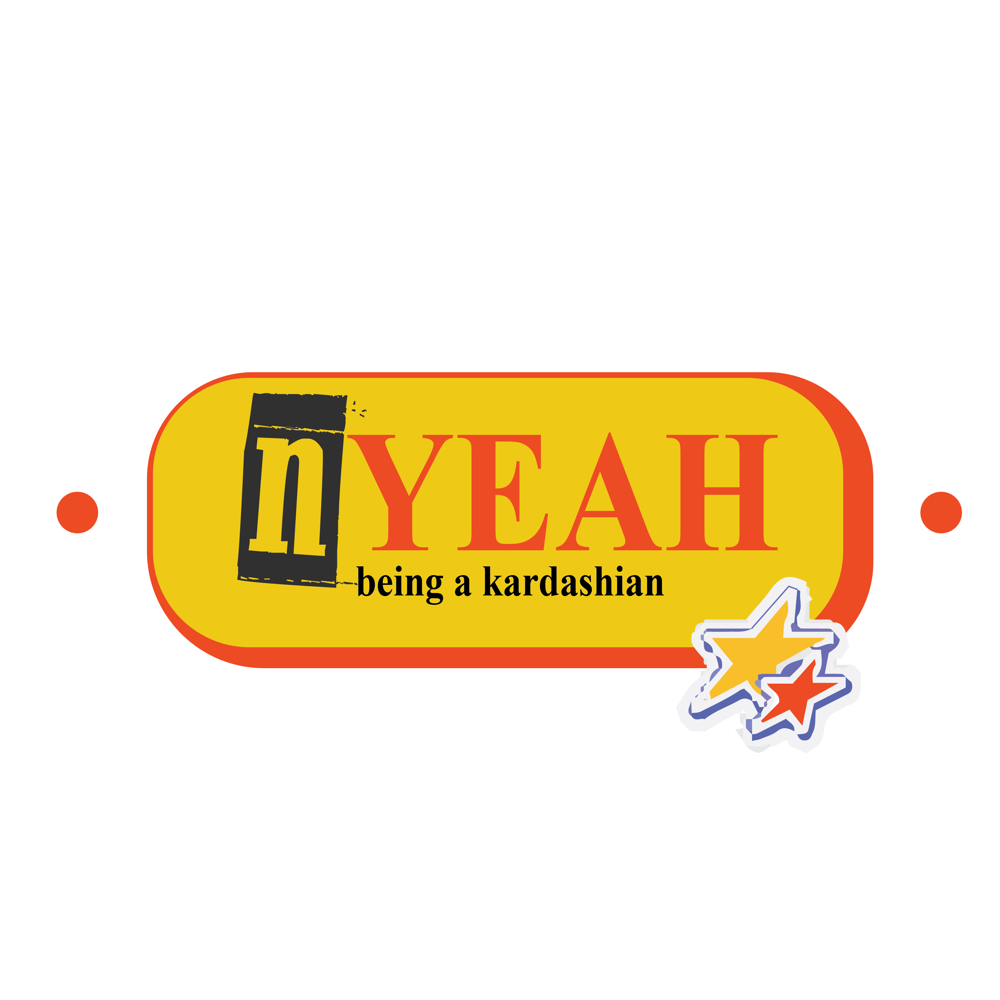

T-Shirt Concept Design
'Cringecore' A fictional brand

The brief was to develop a t-shirt design for a fashion company called Cringecore, which
celebrates a
bold and playful exploration of the “cringe” aesthetic—embracing humor, irony, and a touch of
nostalgia.
Inspired by this concept, I focused on two popular American TikTok creators known for their
impersonations of the Kardashians, in which they humorously recreate scenes from The Kardashians TV
series. Their exaggerated and sassy quotes such as “It’s not professional, and it’s not ethical,”
“Nnyyeeaaahhh,” and “You're dramatic and pathetic, gurl bye!” perfectly captured the ironic,
over-the-top energy that aligned with the Cringecore aesthetic. I decided to base my design concept
around this interpretation.
Alongside my main idea, I explored several alternative directions to experiment with different
visual
styles and ways to express the theme effectively on a t-shirt. Through this creative exploration, I
ultimately decided to adopt a streetwear vibe, which I felt added depth and an appealing edge to
the overall design.
I incorporated photo manipulation techniques, saturated colours, and textured treatments to unify
the
visual elements. My visual research focused heavily on text styling—particularly the use of
dynamic
compositions, angled placements, and serif fonts, which contributed to the bold and ironic
tone
of
the
final piece. The result, seen on the right, reflects both my creative intentions and the playful
nature
of the brief. I'm genuinely pleased with the outcome and am even considering printing the design on
an
actual t-shirt in the near future.




Cotton Drawstring Bags:
Portable visibility during public event activities
Coasters:
Used during meetings and encourage conversation in social gathering spaces


Tote bags:
Used as a sustainable promotion carrying the brand identity
everywhere
Keychains:
For giveaways, as an everyday reminder of international cooperation values


Lawn Banner:
Strong institutional presence outside Council venue
Vertical Banners
Citywide awareness and unified event atmosphere


Lanyards:
Identification, security, and professional event branding
Postage Stamps:
Commemorating Malta’s role in European dialogue